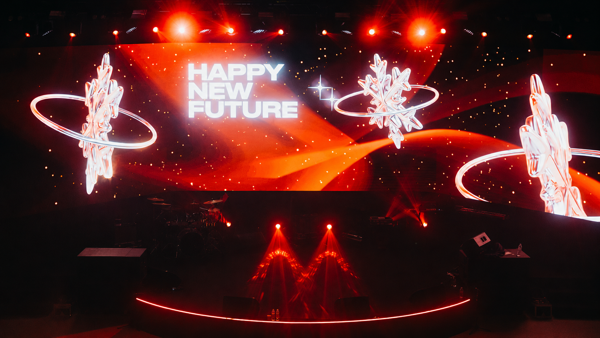
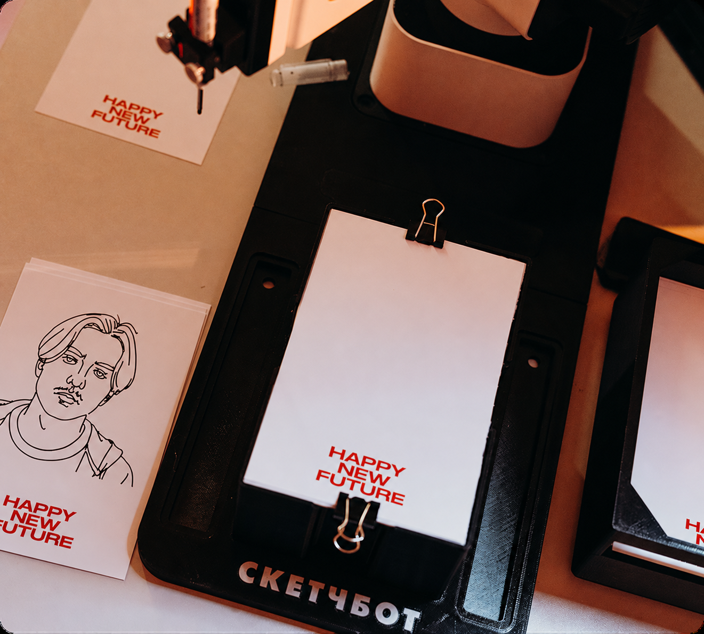
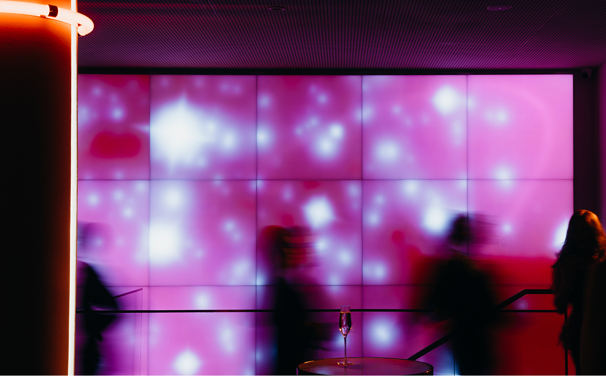

ЗАДАЧА
Показать сотрудникам переход компании к новому технологическому этапу, сохранив узнаваемые внутренние традиции и ощущение общего праздника.
ЛИЧНОЕ ПОРТФОЛИО2026
CVInternal experience
Большой новогодний вечер для международной компании на этапе технологической трансформации — знакомые праздничные ритуалы переосмыслили через digital, интерактив и шоу.



Показать сотрудникам переход компании к новому технологическому этапу, сохранив узнаваемые внутренние традиции и ощущение общего праздника.
Happy New Future: знакомые новогодние ритуалы постепенно переходят в технологичный формат. Декор, программа и механики ведут гостей от привычного Нового года к образу будущего.
Событие построили как переход от классического Нового года к технологичному будущему: LED-навигация, интерактивы, AI-активности, световой декор и финальная вечеринка.
Вечер начинался с классических новогодних артефактов — ёлок, огней, музыки. Постепенно они раскрывались в футуристичном формате.
Внутренние традиции компании остались в центре. Сотрудники не были зрителями со стороны: они выходили на сцену и становились главными героями программы.
Технологии стали интерактивным опытом: гости зажигали ёлку через приложение, взаимодействовали с интерактивной стеной, получали AI-фото и портреты от робо-художника.
Декор также погружал гостей в будущее. LED-навигация, бегущие строки, световые лестницы, металлический декор и большой экран создавали ощущение входа в новую эпоху компании.
Масштабный технологичный визуал, живые номера сотрудников, молекулярный бар — новый этап бренда считывался через вечер, который команда прожила вместе.





ОТКРЫТА К НОВЫМ ЗАДАЧАМ
И ИНТЕРЕСНЫМ БРИФАМ